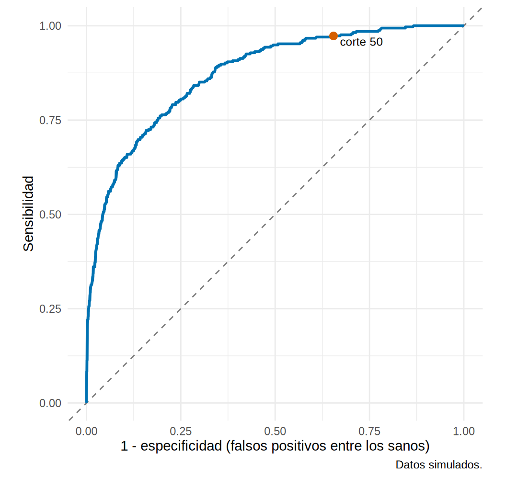
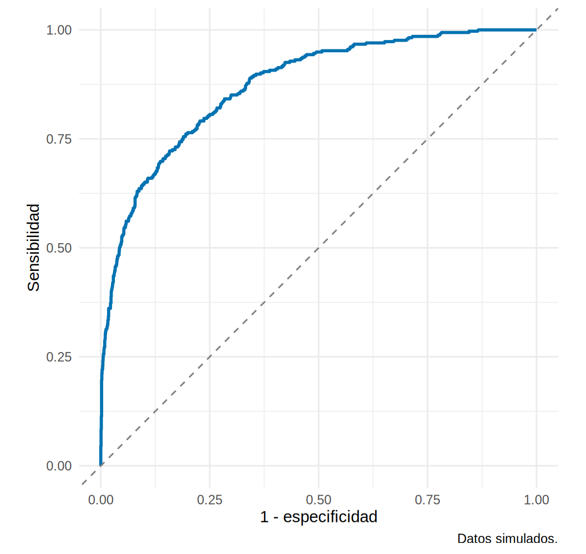
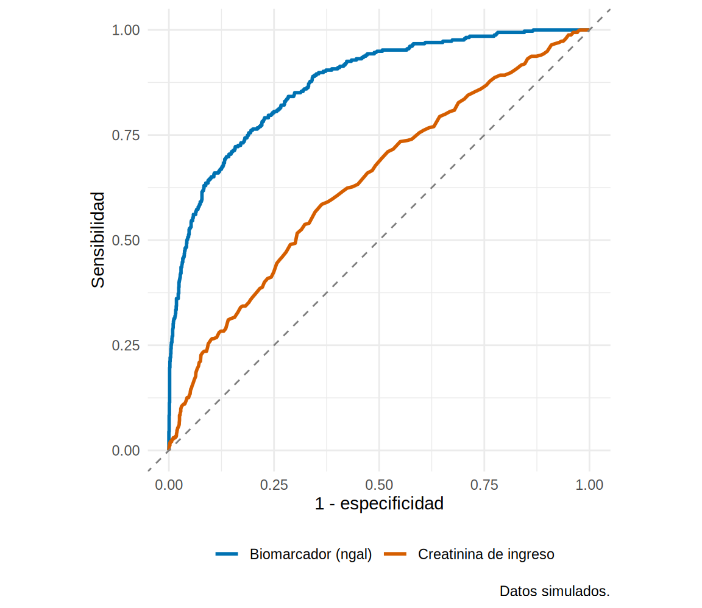

library(tidyverse)
library(pROC)
source("R/funciones_extra_cap16.R")
dx <- read_csv("Bases/dx_lra.csv", show_col_types = FALSE) # datos SIMULADOS (Cap. 16)
## VPP en sala con el corte de 100 ng/mL (de 16.1), para citarlo luego
sala <- filter(dx, entorno == "Sala")
vpp_sala <- sum(sala$ngal >= 100 & sala$lra == 1) / sum(sala$ngal >= 100)
## IC aproximado de un AUC de 0.90 con solo 20 casos y 100 controles (Hanley-McNeil)
ee_pequeno <- se_auc_hanley(0.90, 20, 100)La curva ROC y el AUC: juzgar una prueba continua sin elegir un corte
Nota🩺 Escenario
El laboratorio del hospital te trae el biomarcador urinario y te pregunta: “¿sirve para anticipar la LRA?”. En 16.1 dicotomizaste a 100 ng/mL, pero ese corte fue arbitrario. Otro colega usaría 60 y otro 150, y cada uno obtendría una sensibilidad y una especificidad distintas. Necesitas una forma de juzgar el biomarcador, no un corte en particular.
Un biomarcador continuo no tiene una sensibilidad y una especificidad: tiene una pareja por cada punto de corte posible. La curva ROC (receiver operating characteristic) dibuja todas esas parejas de una vez, y el AUC (área bajo la curva) las resume en un número.
Lo que vamos a hacer
- Construir una curva ROC “a mano” y luego con
pROC. - Interpretar el AUC (qué mide de verdad) y calcular su IC.
- Comparar el AUC de dos pruebas medidas en los mismos pacientes y entender sus límites.
Paso 1. De un punto a una curva
Cada corte da una pareja (sensibilidad, especificidad). Probemos cuatro cortes con metricas_corte() (la prueba es positiva si ngal >= corte):
cortes <- c(50, 100, 150, 250)
metricas_corte(dx$ngal, dx$lra, cortes) |>
select(corte, sens, esp, positivos) |>
mutate(across(where(is.numeric), \(x) round(x, 3)))# A tibble: 4 × 4
corte sens esp positivos
<dbl> <dbl> <dbl> <dbl>
1 50 0.973 0.345 0.708
2 100 0.851 0.698 0.394
3 150 0.704 0.852 0.241
4 250 0.481 0.962 0.112Qué vemos: al subir el corte, la especificidad sube y la sensibilidad baja: el balance de siempre. No hay un corte “gratis”. La ROC dibuja todas las parejas, con la sensibilidad en el eje vertical y 1 − especificidad (la tasa de falsos positivos) en el horizontal. Hagámoslo con cada valor observado como corte:
todos_los_cortes <- sort(unique(dx$ngal))
roc_mano <- metricas_corte(dx$ngal, dx$lra, todos_los_cortes) |> mutate(tfp = 1 - esp)
ggplot(roc_mano, aes(tfp, sens)) +
geom_abline(slope = 1, intercept = 0, linetype = 2, colour = "grey50") + # la prueba inútil: moneda al aire
geom_line(colour = "#0072B2", linewidth = 1) +
geom_point(data = filter(roc_mano, corte %in% cortes), size = 2.5, colour = "#D55E00") +
geom_text(data = filter(roc_mano, corte %in% cortes), aes(label = paste0("corte ", corte)), hjust = -0.15, vjust = 1.2, size = 3.2) +
coord_equal() +
labs(x = "1 - especificidad (falsos positivos entre los sanos)", y = "Sensibilidad", caption = "Datos simulados.") +
theme_minimal(base_size = 11)
Qué vemos: cada punto de la curva es un corte. Moverse hacia la esquina superior izquierda es mejorar (más sensibilidad con menos falsos positivos). La diagonal punteada es una prueba inútil: da positivo al azar. Cuanto más se despega la curva de la diagonal, mejor discrimina el biomarcador.
Paso 2. La ROC con pROC
El paquete pROC hace todo esto (y más) con una función. Lo importante es decirle quién es el caso, quién el control y en qué dirección: aquí los casos (lra = 1) tienen valores mayores, así que direction = "<" (controles < casos).
r_ngal <- roc(response = dx$lra, predictor = dx$ngal,
levels = c(0, 1), # primero el control (0), luego el caso (1)
direction = "<", # los controles tienen valores MENORES que los casos
quiet = TRUE)
r_ngal
Call:
roc.default(response = dx$lra, predictor = dx$ngal, levels = c(0, 1), direction = "<", quiet = TRUE)
Data: dx$ngal in 1665 controls (dx$lra 0) < 335 cases (dx$lra 1).
Area under the curve: 0.8724ggroc(r_ngal, legacy.axes = TRUE, colour = "#0072B2", linewidth = 1) + # legacy.axes: eje x = 1 - especificidad
geom_abline(slope = 1, intercept = 0, linetype = 2, colour = "grey50") +
coord_equal() +
labs(x = "1 - especificidad", y = "Sensibilidad", caption = "Datos simulados.") +
theme_minimal(base_size = 11)
Qué vemos: la misma curva que construimos a mano, con un AUC de 0.872. Si te da una curva “al revés” (AUC < 0.5 en un marcador que debería funcionar), casi seguro direction está mal puesta.
Paso 3. ¿Qué significa el AUC?
El AUC tiene una interpretación concreta y muy intuitiva: es la probabilidad de que, si eliges al azar un paciente con LRA y otro sin LRA, el primero tenga el biomarcador más alto. Con empates cuenta la mitad. Verifiquémoslo comparando todos los pares posibles:
x_caso <- dx$ngal[dx$lra == 1]; x_control <- dx$ngal[dx$lra == 0]
pares <- outer(x_caso, x_control, ">") + 0.5 * outer(x_caso, x_control, "==") # 1 si gana el caso, 0.5 si empata
c(pares_evaluados = length(pares), proporcion_que_gana_el_caso = mean(pares), auc_proc = as.numeric(auc(r_ngal))) pares_evaluados proporcion_que_gana_el_caso
5.577750e+05 8.724136e-01
auc_proc
8.724136e-01 Qué vemos: en 557 775 pares caso-control, el caso tiene el biomarcador más alto el 87.2 % de las veces, idéntico al AUC. Por eso 0.5 es “tirar una moneda” y 1.0 es separar perfectamente.
Dos propiedades prácticas que se deducen de esa definición:
## 1. Solo importa el ORDEN de los valores: una transformación creciente (log, raíz...) no cambia el AUC
c(auc_ngal = as.numeric(auc(r_ngal)),
auc_log_ngal = as.numeric(auc(roc(dx$lra, log(dx$ngal), levels = c(0, 1), direction = "<", quiet = TRUE)))) auc_ngal auc_log_ngal
0.8724136 0.8724136 ## 2. No depende de la prevalencia: se calcula por separado en enfermos y sanos
dx |> group_by(entorno) |>
summarise(prevalencia = round(mean(lra), 3),
auc = round(as.numeric(auc(roc(lra, ngal, levels = c(0, 1), direction = "<", quiet = TRUE))), 3))# A tibble: 2 × 3
entorno prevalencia auc
<chr> <dbl> <dbl>
1 Sala 0.101 0.861
2 UCI 0.316 0.855Qué vemos: el AUC del biomarcador es el mismo con ngal o con log(ngal) (por eso la asimetría del biomarcador no la afecta) y es parecido en la UCI y en la sala (0.855 y 0.861), aunque la prevalencia sea tres veces distinta. Esto contrasta con el VPP de 16.1. Pero cuidado: “no depende de la prevalencia” no significa “no depende del tipo de pacientes” (16.7).
Una guía orientativa (y solo orientativa) para leer el AUC:
- 0.5: sin capacidad (moneda al aire). 0.5-0.7: discriminación pobre.
- 0.7-0.8: aceptable. 0.8-0.9: buena. Más de 0.9: excelente (y sospechosa si viene de un estudio pequeño y con muestra selecta, ver 16.7).
Paso 4. El AUC es una estimación: ponle un intervalo
Con 335 casos, el AUC tiene incertidumbre. pROC da el IC por el método de DeLong (rápido y estándar) o por bootstrap:
ci.auc(r_ngal) # DeLong (por defecto)95% CI: 0.8518-0.893 (DeLong)set.seed(2028) # para que el bootstrap sea reproducible
ci.auc(r_ngal, method = "bootstrap", boot.n = 500) # bootstrap estratificado95% CI: 0.8499-0.8921 (500 stratified bootstrap replicates)Qué vemos: el AUC de 0.87 tiene un IC 95 % de 0.85 a 0.89 (DeLong); el bootstrap da prácticamente lo mismo. Con muestras pequeñas el IC es mucho más ancho: un AUC de 0.90 con solo 20 casos y 100 controles tiene un IC aproximado de 0.81 a 0.99.
Paso 5. Comparar dos pruebas: el test de DeLong para curvas correlacionadas
¿Es el biomarcador mejor que la creatinina de ingreso para anticipar la LRA? Ambas se midieron en los mismos pacientes, así que las curvas están correlacionadas y se debe usar una prueba pareada (no comparar dos IC “a ojo”):
r_creat <- roc(dx$lra, dx$creat_ingreso, levels = c(0, 1), direction = "<", quiet = TRUE)
roc.test(r_ngal, r_creat, method = "delong") # prueba pareada de DeLong
DeLong's test for two correlated ROC curves
data: r_ngal and r_creat
Z = 12.069, p-value < 2.2e-16
alternative hypothesis: true difference in AUC is not equal to 0
95 percent confidence interval:
0.1962966 0.2724139
sample estimates:
AUC of roc1 AUC of roc2
0.8724136 0.6380584 ggroc(list(`Biomarcador (ngal)` = r_ngal, `Creatinina de ingreso` = r_creat), legacy.axes = TRUE, linewidth = 1) +
geom_abline(slope = 1, intercept = 0, linetype = 2, colour = "grey50") +
scale_colour_manual(values = c("#0072B2", "#D55E00")) +
coord_equal() +
labs(x = "1 - especificidad", y = "Sensibilidad", colour = NULL, caption = "Datos simulados.") +
theme_minimal(base_size = 11) + theme(legend.position = "bottom")
Qué vemos: el AUC del biomarcador (0.87) supera claramente al de la creatinina (0.64): diferencia de 0.23 (IC 95 % 0.2 a 0.27; p < 0.001). En la figura, la curva azul va por encima de la naranja en casi todo el recorrido.
Cuando las curvas se cruzan, el AUC no cuenta toda la historia: una prueba puede ser mejor en la zona de alta sensibilidad y la otra en la de alta especificidad. Para eso existe el AUC parcial, que mide el área solo en la zona clínicamente relevante. Por ejemplo, el área con especificidad entre 80 % y 100 %:
auc(r_ngal, partial.auc = c(1, 0.8), partial.auc.focus = "specificity", partial.auc.correct = TRUE)Corrected partial area under the curve (specificity 1-0.8): 0.776El argumento partial.auc.correct = TRUE la reescala (corrección de McClish) para que 0.5 siga siendo “moneda” y 1 “perfecto” dentro de esa zona.
Paso 6. ¿Y si hay varios estudios del mismo biomarcador?
Es común encontrar varios estudios que reportan el AUC de una misma prueba en distintos hospitales. Se pueden combinar con un metaanálisis de efectos aleatorios sobre el logit del AUC (que mantiene el resultado entre 0 y 1). La idea viene de los códigos del autor para meta-analizar el estadístico c (archivo r_script_meta-analysis_c-statistic.txt, que usa el paquete metamisc). Abajo, seis estudios ficticios (rotulados así: no son datos reales) y metafor, que sí está disponible:
library(metafor)
estudios <- tibble(
estudio = paste("Estudio", 1:6), auc = c(0.82, 0.90, 0.78, 0.88, 0.93, 0.85),
casos = c(40, 65, 30, 120, 25, 80), controles = c(160, 300, 110, 480, 70, 350) # FICTICIOS
) |>
mutate(se_auc = se_auc_hanley(auc, casos, controles), # EE de Hanley-McNeil
yi = qlogis(auc), sei = se_auc / (auc * (1 - auc))) # logit(AUC) y su EE (método delta)
m_auc <- rma(yi, sei = sei, data = estudios, method = "REML")
predict(m_auc, transf = plogis) # AUC combinada, IC e intervalo de predicción
pred ci.lb ci.ub pi.lb pi.ub
0.8602 0.8224 0.8910 0.7874 0.9109 Qué vemos: el AUC combinada es de 0.86 (IC 0.82 a 0.89), con heterogeneidad moderada (I² = 38 %). Lo que más importa es el intervalo de predicción (0.79 a 0.91): el AUC que podrías esperar en un nuevo hospital, más amplio que el IC del promedio.
Con el paquete metamisc (el que usa el autor; código no verificado en el entorno de pruebas del libro):
library(metamisc)
fit_mm <- with(estudios, valmeta(cstat = auc, cstat.se = se_auc, N = casos + controles, O = casos, slab = estudio))
fit_mm # AUC combinada con IC e intervalo de predicción
plot(fit_mm) # bosque (forest plot)
Advertencia⚠️ Un AUC alto no es utilidad clínica
El AUC resume qué tan bien ordena el biomarcador a enfermos y sanos. No dice (1) si cambia una decisión del clínico, (2) qué tan calibradas están las probabilidades, ni (3) cuántos falsos positivos habrá en tu prevalencia. Con un AUC de 0.87, en 16.1 el VPP en sala era de solo 25 % con el corte de 100. Las respuestas a esas preguntas están en 16.3 (corte), 16.5 (calibración) y 16.6 (utilidad).
Importante🎯 En resumen
- La curva ROC grafica sensibilidad contra 1 − especificidad para todos los puntos de corte; el AUC resume la curva en un número.
- El AUC es la probabilidad de que un caso tenga un valor mayor que un no caso, tomados al azar: 0.5 es azar, 1 es perfecto. Solo depende del orden de los valores, no de su escala ni de la prevalencia.
- Reporta el AUC con su IC (DeLong o bootstrap) y compara dos pruebas medidas en los mismos pacientes con la prueba pareada de DeLong (
roc.test). - Si las curvas se cruzan, mira el AUC parcial en la zona relevante.
- AUC alto ≠ utilidad clínica: no informa sobre calibración ni sobre decisiones.
Ejercicio
- Calcula el AUC del biomarcador solo en pacientes con diabetes y en los sin diabetes. ¿Es parecido? ¿Cambia el IC? ¿Por qué?
- Compara el AUC de
ngalcontra el de la edad (roc.test). ¿Qué esperarías? Dibuja las dos curvas. - Corre
ci.auc(r_ngal, method = "bootstrap", boot.n = 2000)con distintas semillas. ¿Cuánto varía el IC? ¿Y el de DeLong?